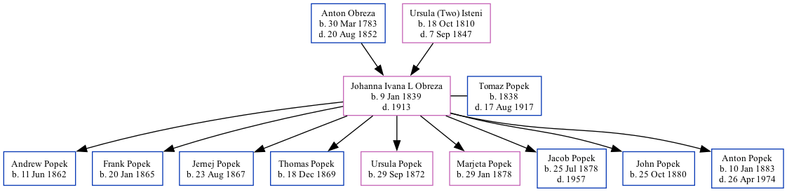

Johanna Popek (née Obreza) 1839 - 1913
[ Home ] | [ Calendar ] | [ Surnames Index ] | [ Family History ]The 3rd of 6 children of Anton Obreza and Ursula (Two) Isteni, Johanna Obreza, the five times great-aunt of Michele Copp (née Phillips), was born in Bezuljak, Cerknica, Slovenia on Jan 9, 1839 and, and was orphaned at the age of 13 following the death of her mother in 1847 and father in 1852.
She had 9 children with Tomaz Popek: Andrew, Frank, Jernej, Thomas, Ursula, Marjeta, Jacob, John and Anton
She died in 1913.
Parents
- Anton was born on Mar 30, 1783
- Ursula (two) was born on Oct 18, 1810
Children
- Andrew was born on Jun 11, 1862
- Frank was born on Jan 20, 1865
- Jernej was born on Aug 23, 1867
- Thomas was born on Dec 18, 1869
- Ursula was born on Sep 29, 1872
- Marjeta was born on Jan 29, 1878
- Jacob was born on Jul 25, 1878
- John was born on Oct 25, 1880
- Anton was born on Jan 10, 1883
Family Tree
Generated by ged2site. Last updated on Sep 18, 2024